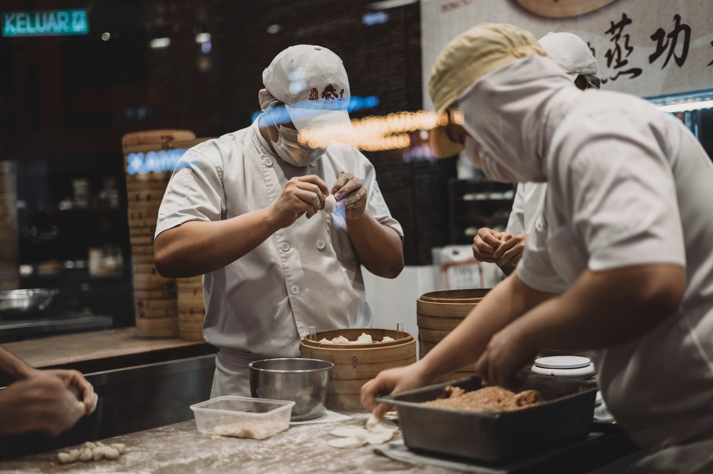

Sebuah produk wirausaha dengan tema makanan dimsum yang disajikan dalam konsep dan suasana yang menarik.
Profil Dimsum Dreamland

Dimsum Dreamland bukan hanya sekadar restoran, tetapi juga destinasi kuliner yang memanjakan lidah dengan kelezatan hidangan orientalnya. Terletak di jantung kota, restoran ini telah menjadi tempat favorit bagi pecinta dimsum yang mencari pengalaman makan yang istimewa.
Dengan tema yang memikat dan suasana yang memanjakan, Dimsum Dreamland mengajak Anda untuk merasakan kehangatan dan keindahan oriental sejak langkah pertama Anda masuk ke dalamnya. Dekorasi yang dipadukan dengan sempurna antara elemen-elemen tradisional dan modern menciptakan atmosfer yang mengundang dan memukau. Tiap sudut ruangan dipenuhi dengan keindahan seni, dari meja-meja kayu yang elegan hingga lampu gantung yang memberikan sentuhan romantis.
Namun, yang membuat Dimsum Dreamland benar-benar istimewa adalah hidangan-hidangannya yang memikat rasa. Dengan fokus pada kualitas bahan dan keahlian dalam penyajian, setiap hidangan dimsum yang disajikan di sini adalah sebuah karya seni kuliner yang tiada tanding. Gigitan pertama ke dalam siomay gurih atau hakau kenyal akan mengirimkan lidah Anda pada perjalanan melintasi rasa yang memanjakan.
Tidak hanya itu, Dimsum Dreamland juga dikenal karena inovasi kuliner yang terus-menerus. Para chefnya tidak pernah berhenti menciptakan hidangan-hidangan baru yang memukau dengan kombinasi rasa yang segar dan unik. Dari hidangan klasik hingga kreasi-kreasi modern, setiap sajian adalah perpaduan sempurna antara tradisi dan kreativitas.
Saat Anda menikmati kelezatan hidangan, Anda juga akan disambut dengan pelayanan yang ramah dan profesional. Para staf Dimsum Dreamland selalu siap untuk memberikan rekomendasi yang membantu dan melayani Anda dengan senyum yang hangat. Dengan layanan yang cepat dan efisien, Anda bisa menikmati makanan Anda tanpa harus menunggu lama.
Jika Anda mencari pengalaman kuliner yang istimewa dengan sentuhan oriental yang autentik, tak ada tempat yang lebih baik untuk dikunjungi selain Dimsum Dreamland. Bersiaplah untuk merasakan sensasi yang menggoda dan memikat sejak Anda memasuki pintu gerbang restoran ini. Selamat menikmati!
Paket Hemat Produk
Paket hemat produk di Dimsum Dreamland adalah pilihan yang sempurna bagi para pengunjung yang ingin menikmati hidangan lezat kami dengan harga yang terjangkau. Kami memahami bahwa kepuasan pelanggan tidak hanya tentang rasa, tetapi juga tentang nilai yang diberikan atas uang yang mereka habiskan. Oleh karena itu, kami dengan bangga mempersembahkan paket hemat produk yang memungkinkan Anda menikmati hidangan berkualitas tinggi kami dengan harga yang ramah di kantong.
NO
PAKET PRODUK
HARGA
KETERANGAN
1
Paket Dimsum Ayam + Es Teh Manis
Rp35.000
Isi 3 Dimsum
2
Paket Siomay Ayam + Es Jeruk
Rp40.000
Isi 4 Siomay
3
Paket Dimsum Udang + Es Teh Manis
Rp50.000
Isi 3 Dimsum
4
Paket Hakau + Bakpau + Es Teh Manis
Rp70.000
Isi 3 Hakau dan 3 Bakpau
Cara Pemesanan
Ingin menikmati kelezatan dimsum dari Dimsum Dreamland tanpa harus meninggalkan kenyamanan rumah Anda? Tak perlu khawatir! Kami menyediakan cara mudah untuk memesan dimsum favorit Anda dengan beberapa cara yaitu dengan melakukan booking seat atau dine in langsung ke restoran.
Untuk pemesanan dimsum berbentuk frozen food bisa langsung menghubungi nomor di bawah ini :
Restoran Dimsum Dreamland tidak sekadar tempat makan; itu adalah pengalaman kuliner yang tak terlupakan. Dari sejarah yang mendalam hingga proses kreatif yang penuh dedikasi, setiap aspek dari restoran ini mencerminkan hasrat yang mendalam akan cita rasa dan keindahan seni kuliner. Jika Anda mencari petualangan kuliner yang menakjubkan, jangan ragu untuk mencicipi keajaiban dimsum di Restoran Dimsum Dreamland.
Proses Kreatif: Keajaiban di Balik Layar
Setiap hidangan di Restoran Dimsum Dreamland merupakan hasil dari dedikasi dan keterampilan tim dapur yang berbakat. Dari seleksi bahan baku hingga presentasi akhir, setiap langkah dipenuhi dengan perhatian terhadap detail dan kecintaan akan seni kuliner.
Seleksi Bahan Berkualitas: Tim dapur Restoran Dimsum Dreamland hanya menggunakan bahan-bahan berkualitas terbaik untuk menciptakan hidangan-hidangan mereka. Dengan memprioritaskan bahan segar dan bermutu tinggi, mereka menjamin keaslian dan kelezatan setiap hidangan.
Teknik Memasak yang Mahir: Dapur restoran menjadi medan bagi keterampilan dan keahlian dalam memasak. Dengan penguasaan teknik-teknik tradisional dan inovatif, setiap hidangan dimsum dipersiapkan dengan sempurna untuk mencapai cita rasa yang diinginkan.
Presentasi yang Menawan: Keindahan visual juga menjadi perhatian utama dalam menyajikan hidangan. Dengan sentuhan kreatif dan estetika yang halus, setiap hidangan di Restoran Dimsum Dreamland tidak hanya memikat lidah, tetapi juga mata.
Menghidupkan Mimpi dalam Setiap Gigitan
Restoran Dimsum Dreamland tidak sekadar tempat makan; itu adalah pengalaman kuliner yang tak terlupakan. Dari sejarah yang mendalam hingga proses kreatif yang penuh dedikasi, setiap aspek dari restoran ini mencerminkan hasrat yang mendalam akan cita rasa dan keindahan seni kuliner. Jika Anda mencari petualangan kuliner yang menakjubkan, jangan ragu untuk mencicipi keajaiban dimsum di Restoran Dimsum Dreamland.
Pengalaman Pengguna yang Memuaskan
Ketika Anda memasuki Restoran Dimsum Dreamland, Anda akan disambut oleh suasana yang hangat dan ramah. Desain interior yang elegan dan nyaman menciptakan lingkungan yang mengundang untuk bersantap bersama teman dan keluarga. Tim pelayanan yang profesional dan ramah siap membantu Anda dengan senyum yang tulus, menjadikan kunjungan Anda sebagai pengalaman yang menyenangkan dari awal hingga akhir.